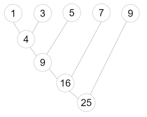

这本书添加了注释功能，左键选择任何文字，就会弹出注释菜单。注释功能区在页面的右上角。
注释有公共和私人两类。私人注释只有自己能看见，公共则所有人都能看见。
8 函数式编程简述
8.1 map和filter
8.1.1 map
有一个List，a = [1,2,3,4,5]，你现在要把其中的每一个元素都乘以2，并保存在一个新的List中。用现有的知识，可以这样
- 建立一个空的List用来保存结果
result = [] - 循环
a中的所有元素，并且乘以2，添加到result的末端
a = [1,2,3,4,5]
print(a)## [1, 2, 3, 4, 5]result = []
for i in a:
result.append(i*2)
print(result)## [2, 4, 6, 8, 10]map函数，可以把一个函数，应用到List中的所有元素上。
def do_double(x):
'翻倍函数'
return x * 2
print(do_double(3))## 6把do_dobule函数，应用到列表a中的每一个元素里。
result = map(do_double, a) # 把do_dobule函数，应用到列表a中的每一个元素里。
print(list(result))## [2, 4, 6, 8, 10]也可用列表推导
result = [i * 2 for i in a]
print(result)## [2, 4, 6, 8, 10]result = [do_double(i) for i in a]
print(result)## [2, 4, 6, 8, 10]把a里的元素，全部转换为str
result = map(str, a) # 把str函数，应用到列表a中的每一个元素里。
print(list(result))## ['1', '2', '3', '4', '5']8.1.2 filter
有一个List，a = [1,2,3,4,5]，你现在要选出符合特定条件的元素，例如选出其中的奇数，组成一个新的List。用循环做：
a = [1,2,3,4,5]
result = []
for i in a:
if i % 2 == 1:
result.append(i)
print(result)## [1, 3, 5]和map一样，定义一个is_odd函数，作为filter的过滤条件，应该返回布尔值(True/False)，作为是否符合条件的结果。
def is_odd(x):
return x % 2 == 1
print(is_odd(3))## Trueprint(is_odd(6))## Falsefilter(判断函数, List)
result = filter(is_odd, a)
print(list(result))## [1, 3, 5]当然，也可以用列表推导
[i for i in a if is_odd(i)]## [1, 3, 5]8.1.3 混合map和filter
选出a中的奇数，并乘以2
map 和 filter的做法
result = list(map(do_double, filter(is_odd, a)))
print(result)## [2, 6, 10]列表推导的做法
result = [do_double(i) for i in a if is_odd(i)]
print(result)## [2, 6, 10]这其实可以理解为一个“数据流的概念”：
'''
a
-> filter by is_odd()
-> map by do_double()
-> reuslt
'''## '\na \n-> filter by is_odd()\n-> map by do_double()\n-> reuslt\n'- 列表
a首先经过filter函数的加工，然后再经过map函数的加工，最后得到reuslt。 - 比喻：一堆水果(数据）-> 剔除坏的（处理1）-> 清洗（处理2）-> 削皮（处理3）-> 榨汁（处理4） -> 果汁（处理后的数据）
注：
- 多数情况下，列表推导和map/filter函数几乎可以相互替代
- 列表更加符合Python的“风格”
- 但超级巨大List时，用map/filter性能更好：map/filter是一个lazy（惰性）函数，只有在你引用其中的值时，才会把函数真正应用上去。
- map/filter的结果，最后要转为list
所以
- 清晰性：列表推导 > map/filter函数 > 循环
- 性能：map/filter函数 > 列表推导 > 循环
从逻辑上来讲，应该是先有map/filer：要把一个函数应用到List中的所有元素/过滤元素，这是个基础性的需求，大多数编程语言都有做这件事的办法。我们一般把这种操作统称为map/filter。Python的列表推导，可以看成是一个Python优化版的map/filter。
8.1.4 匿名函数 lambda
在我们使用map、filter，或者列表推导的时候，如果要对列表做的操作非常简单、一目了然，并且可以写进一行（比如乘以二，或者取最后一个字母等等），那么我们可以不用专门写一个函数，而直接放一个匿名函数进去。
使用lambda关键字，一个表达式，直接返回这个表达式的结果，不用写return。
写法一般是：
lambda <参数列表>: <对参数的操作>
例如一个匿名版本的add(a,b)函数：
lambda a,b : a + b
或者一个匿名的翻倍函数：
lambda x: x * 2
以把一个列表所以元素翻倍为例：
用普通函数：事先定义了一个do_double函数，这个函数返回参数x2
result = map(do_double, a)
print(list(result))## [2, 4, 6, 8, 10]用匿名函数：乘以2这类简单操作，用匿名函数即可，可以省下预先定义do_double函数。
result = map(lambda x : x * 2,a)
print(list(result))## [2, 4, 6, 8, 10]注：
对于初学者，如果不是一个超级简单的操作，建议还是应该用一个可以“顾名思义”的函数。
8.1.5 map和filter的结果：惰性
如果我们直接打印map和filter的结果，我们会发现，它们的返回值不是一个List，而是一个map object或者filter object。
这是因为map和filter，不会在你调用map()/filter()函数的时候马上进行计算，而是在你读取其中的值的时候，才进行具体计算。我们称之为“惰性求值”。
例如，用前面的List翻倍的例子。
a = [1,2,3,4,5]
result = map(lambda x : x * 2,a) # 当你调用map的时候，并未真正地进行计算
print(result)## <map object at 0x7fbe20fa2be0>所以，当你把map()/filter()函数的结果打印出来看的时候，python会告诉你，这是个map/filter object，即map/filter函数的结果。但是，里面具体的数据还没计算出来，所以没法直接使用
要用，很简单，用list()函数转换为一个列表即可。
print(list(result))## [2, 4, 6, 8, 10]当然，如果你使用列表推导，那么结果直接就是一个List。
result = [i * 2 for i in [1,2,3,4,5]]
print(result)## [2, 4, 6, 8, 10]def is_even(x):
return x & 1 != 0
filter(is_even, [1, 2, 3, 4, 5, 6, 7, 8, 9, 10])## <filter object at 0x7fbe20fa46d0>8.2 高阶函数
在python中，函数是一等公民（头等函数，first-class function）。
一个函数，可以和任何变量或者对象一样，绑定一个名字（函数名），也可以换一个名字（重绑定），也可以作为参数传递给另一个函数（函数作为参数传另一个函数），也可以作为一个函数的返回值（函数返回另一个函数）。
8.2.1 函数是一等公民
def add(x,y):
return x + y
print(add(1,2))## 3函数和变量一样，其名字也可以重新绑定.
dda = add之后，dda和add指向同一个函数（加法函数），dda()也可以正常调用。
dda = add
print(dda(1,2))## 38.2.2 函数作为参数
例如map，可以把一个指定的函数，应用到List的每一个元素上。
map()函数的第一参数，就是你要应用到List元素上的函数， 比如前例中乘以2do_double，这里是把函数do_double作为参数传递给了map。第二个参数，就是你要处理的List。
result = map(do_double, [1,2,3,4,5])
print(list(result))## [2, 4, 6, 8, 10]8.2.3 “函数生成器”（进阶）
用参数来生成不同的函数。
例如，我们写一个函数，用于求一个数x的n次方。显然我们可以写一个这样的函数。
def power(x,n):
return x ** n例如，3的平方：
print(power(3,2))## 9例如，2的3次方：
print(power(2,3))## 8平方、三次方等等，非常的常用，我们想写个专门的函数，可以少输入一个参数
def square(x):
return power(x,2)
print(square(3))## 9同样，三次方也是
def cube(x):
return power(x,3)
print(cube(2))## 8我们看到，这2个函数，函数体几乎完全一样，只有1个地方不同：2和3。
- 如果某些场合，4次方也很常用，我们可以原样建立一个4次方函数。
- 但是，这么多的函数，只有1个地方不同，必定是可以再往上抽象一层。
这个函数，可以根据你给的参数n，生成另一个函数：n次方函数生成器
def make_power_funcion(n):
def func(x):
# return power(x, n) # 也是一样的
return x ** n
return funcmake_power_funcion是一个函数，这个函数会返回另一个函数func
'''
约等于以下代码
def func(x):
n = 2
return x ** n
square = func
'''## '\n约等于以下代码\n\ndef func(x):\n n = 2\n return x ** n\n\nsquare = func\n'square = make_power_funcion(2)cube = make_power_funcion(3)print(square(3))## 9print(cube(2))## 88.2.4 reduce （进阶）
reduce和map一样，不单是一个具体的函数，同时也是“一种常用的操作”，所以放在大部分编程语言中，都有相同的含义。因此一般会与map并列，常称之为map/reduce。
和map一样，reduce同样可以把一个函数应用到一个列表上，区别在于，你使用reduce的时候，你要运用的函数，例如func(x,y)，有2个参数。
reduce会这么做：
- 取出你要处理的列表的头2个元素（
a[0]和a[1]），传进func(a[0], a[1])中，并得到一个返回值，如z1 - 取出列表的第3个元素
a[2]，和前一个结果，一起传入func(z1,a[2])，得到一个返回值，如z2 - 取出列表的第4个元素
a[3]，和前一个结果，一起传入func(z2,a[3])，得到一个返回值，如z3 - …
例如，我们对一个列表a = [1,3,5,7,9]，reduce一下应用我们前面写的add()函数。
显然，这个操作大概是这个过程。

reduce函数在functools模块中，模块我们后面会讲。要引入reduce函数，使用这行代码：
from functools import reduce
from functools import reduce
a = [1,3,5,7,9]
reduce(add,a)## 258.2.5 闭包Closure（进阶）
一个闭包closure，可以认为是一个函数，但除了函数体本身，包含了定义闭包时的数据。
例如
def make_power_funcion(n):
def func(x):
# return power(x, n) # 也是一样的
return x ** n
return func这个代码里，调用power()函数，会返回另一个函数fun()。
这个函数里面调用了变量n，但n不在fun()的函数体内，而在上一层。fun()函数，会把生产自己的坏境中的变量（本例中即n），也包括在里面：闭包是一个附带数据的函数。
这段代码发生了什么？
square = make_power_funcion(2) square函数，相当于一个附带了n=2的func()函数
power(n = 2)，其中n = 2- 在
make_power_funcion()函数的内部，func(x)是可以看见这个n=2的 return func的时候，会把n=2，一并返回到外层square = power(2),此时我们把square这个名字，绑定给func这个函数（闭包），而后者同时还附带了n=2
前面讲变量作用域，python找一个名称，是从内到外
- L局部作用域：即函数体内。例如本例中
func函数的x - Enclosing function locals：函数中嵌套函数的外部：例如本例中
func函数的n - G全局：代码的最外层
- B内置名称：python的一些内置的名称，如
max函数
现在可知，python查找变量名，先找局部作用域（函数内部），再找闭包的附带数据，再找全局变量，再找python的内置名称。